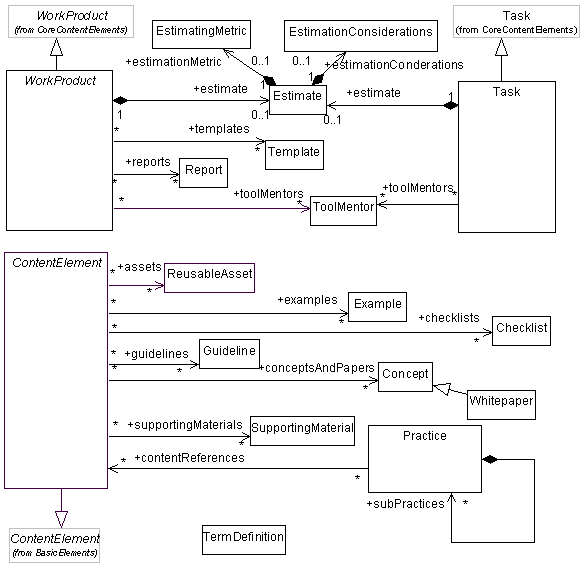

| Рекомендации |
 |
|
Взаимосвязи
| Материалы |
|---|
Основное описание
В архитектуре UMA предусмотрено несколько предопределенных типов указаний. В целях абстрактной классификации указаний используются механизмы множественности и привязки. Например, в архитектуре UMA шаблоны могут быть привязаны только к продуктам работы. Правила привязки указаний задаются с помощью следующей диаграммы UML:  |
© Copyright IBM Corp. 1987, 2005 Все права защищены |